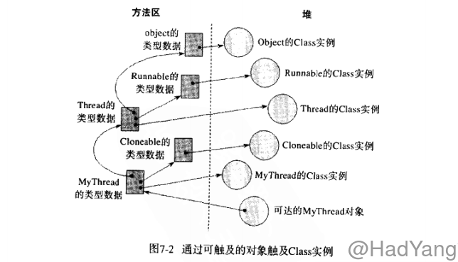

深入Java虚拟机读书笔记——对象的生命周期
文章目录
一旦一个类被装载、连接和初始化，它就随时可以被使用。程序可以访问它的静态字段，调用它的静态方法，或者创建它的实例。作为Java程序员有必要了解Java对象的生命周期。
类实例化
在Java程序中，类可以被明确或隐含地实例化。明确的实例化类有四种途径：
- 明确调用
new。 - 调用
Class或者java.lang.reflect.Constructor对象的newInstance方法。 - 调用任何现有对象的
clone。 - 通过
java.io.ObjectInputStream.getObject()反序列化。
隐含的实例化：
- 可能是保存命令行参数的
String对象。 - 对于Java虚拟机装载的每个类，都会暗中实例化一个Class对象来代表这个类型
- 当Java虚拟机装载了在常量池中包含
CONSTANT_String_info入口的类的时候，它会创建新的String对象来表示这些常量字符串。 - 执行包含字符串连接操作符的表达式会产生新的对象。
Java编译器为它编译的每个类至少生成一个实例初始化方法。在Java class文件中，这个方法被称为<init>。针对源代码中每个类的构造方法，Java编译器都会产生一个<init>()方法。如果累没有明确的声明任何构造方法，编译器会默认产生一个无参数的构造方法，它仅仅调用父类的无参构造方法。
一个<init>()中可能包含三种代码：调用另一个<init>()、实现对任何实例变量的初始化、构造方法体的代码。
如果构造方法明确的调用了同一个类中的另一个构造方法(this())，那么它对应的<init>()由两部分组成：
- 一个同类的
<init>()的调用。 - 实现了对应构造方法的方法体的字节码。
在它对应的
<init>()方法中不会有父类的<init>()，但不代表不会调用父类的<init>()，因为this()中也会调用父类<init>()
如果构造方法不是通过一个this()调用开始的，而且这个对象不是Object，<init>()则有三部分组成：
- 一个父类的
<init>()调用。如果这个类是Object,则没有这个部分 - 任意实例变量初始化方法的字节码。
- 实现了对应构造方法的方法体的字节码。
如果构造方法明确的调用父类的构造方法super()开始，它的<init>()会调用对应父类的<init>()。比如，如果一个构造方法明确的调用super(int,String)开始，对应的<init>()会从调用父类的<init>(int,String)方法开始。如果构造方法没有明确地从this()或super()开始，对应的<init>()默认会调用父类的无参<init>()。
垃圾收集和对象的终结
程序可以明确或隐含的为对象分配内存，但不能明确的释放内存。一个对象不再为程序引用，虚拟机必须回事那部分内存。
卸载类
在很多方面，Java虚拟机中类的生命周期和对象的生命周期很相似。当程序不再使用某个类的时候，可以选择卸载它们。
类的垃圾收集和卸载值所以在Java虚拟机中很重要，是因为Java程序可以在运行时通过用户自定义的类装载器装载类型来动态的扩展程序。所有被装载的类型都在方法区占据内存空间。
Java虚拟机通过判断类是否在被引用来进行垃圾收集。判断动态装载的类的Class实例在正常的垃圾收集过程中是否可触及有两种方式：
- 如果程序保持非
Class实例的明确引用。 - 如果在堆中还存在一个可触及的对象，在方法区中它的类型数据指向一个
Class实例。
